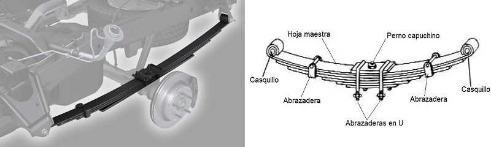
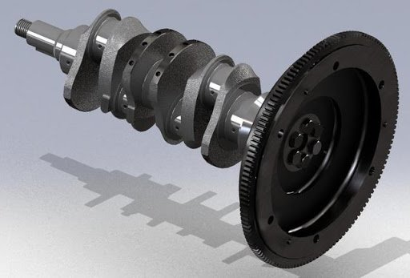

Son los elementos de las máquinas que permiten almacenar energía mecánica de la propia máquina para ser liberada en un momento posterior. Estudiaremos en esta sección los muelles, las ballestas y los volantes de inercia.
Mecanismos y máquinas
4.1. Acumuladores de energía
Muelles
Son unos arrollamientos helicoidales de acero elástico que se retuercen y/o comprimen según el esfuerzo a soportar. Su misión es absorber energía en forma de vibraciones o cuando una fuerza actúa sobre ellos, para, a continuación, liberaría lentamente.

Una aplicación típica es como elemento de suspensión de vehículos.
Ballestas
Las ballestas están formadas por un conjunto de láminas de acero, unidas mediante unas abrazaderas que permiten el deslizamiento entre las hojas cuando éstas se deforman por el peso que soportan.
Se usan como elemento de suspensión de vehículos pesados, para absorber vibraciones.


Volante de inercia
Es un elemento totalmente pasivo, que únicamente aporta al sistema una inercia adicional, de modo que le permite almacenar energía cinética. Este volante continúa su movimiento por inercia cuando cesa el par motor que lo propulsa.
Consiste en una rueda o un disco, de fundición o de acero, que se monta en un eje o árbol, para garantizar un giro regular. Esta rueda o volante es capaz de evitar irregularidades en el giro. La inercia de este volante frena el giro del eje cuando éste tiende a acelerarse y le obliga a girar cuando tiende a detenerse.
La energía cinética que acumula un volante de inercia al girar con una velocidad angular ω es la siguiente:
| \[E_{C}=\frac{1}{2}\cdot I\cdot \omega ^{2}\] |
Donde:
- EC: energía cinética del volante, en julios (J)
- I: momento de inercia del volante, en kilogramos-metro cuadrado (kg·m2)
- ω: velocidad angular del volante, en radianes por segundo (rad/s)
Podemos ver que el momento de inercia del volante es un elemento determinante porque, a mayor I, mayor energía cinética es capaz de acumular el volante. Ese momento de inercia depende de la masa del volante y de su radio. En concreto su expresión es:
| \[I=\frac{1}{2}\cdot m\cdot r ^{2}\] |
Donde:
- I: momento de inercia del volante, en kilogramos-metro cuadrado (kg·m2)
- m: masa del volante de inercia, en kilogramos (kg)
- r: radio del volante de inercia, en metros (m)
Como un volante de inercia se utiliza para almacenar energía cinética, nos interesa que su momento de inercia sea elevado. Por eso, los volantes de inercia suelen ser pesados (mucha masa) y lo más grande que permita la maquina (mucho radio).
En esta imagen puedes ver un volante de inercia de un motor de combustión interna, junto con el cigüeñal del motor. Puedes observar que el radio del volante de inercia es bastante mayor que el del cigüeñal:

El exceso de energía (ΔW) que absorbe el volante de inercia se traduce en una variación de la velocidad angular entre la mínima posible (ωmin) y la máxima posible (ωmax) según la expresión:
| \[\Delta W=\frac{1}{2}\cdot I\cdot (\omega_{max} ^{2}-\omega_{min} ^{2})\] |
Un parámetro importante de los volantes de inercia es el grado de irregularidad o coeficiente de fluctuación (Cf), que se define como:
| \[C_{f}=\frac{\omega_{max} - \omega_{min}}{\omega_{med}}\] |
Donde ωmed es la velocidad angular media, que se calcula como la media aritmética de las velocidades angulares máxima y mínima:
| \[\omega_{med}=\frac{\omega_{max} + \omega_{min}}{2}\] |
Según sea la máquina o la aplicación de la misma, será necesario un valor mayor o menor de Cf.
Ejercicios de volantes de inercia
Obra publicada con Licencia Creative Commons Reconocimiento No comercial Compartir igual 4.0